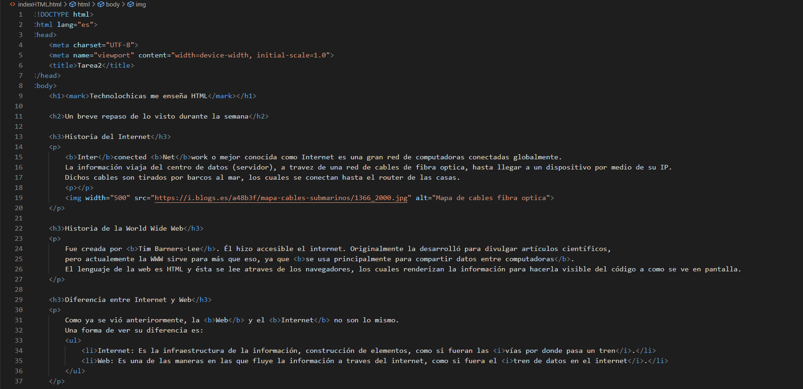
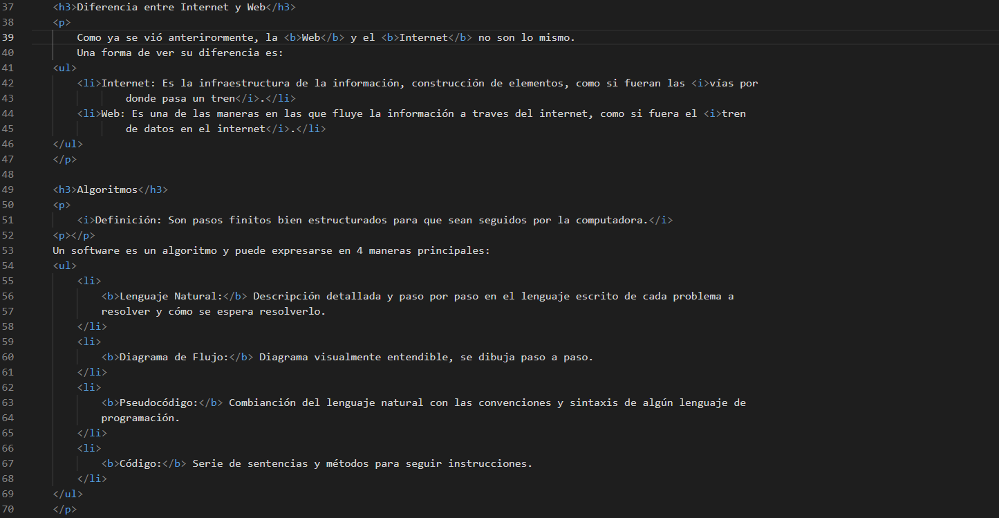
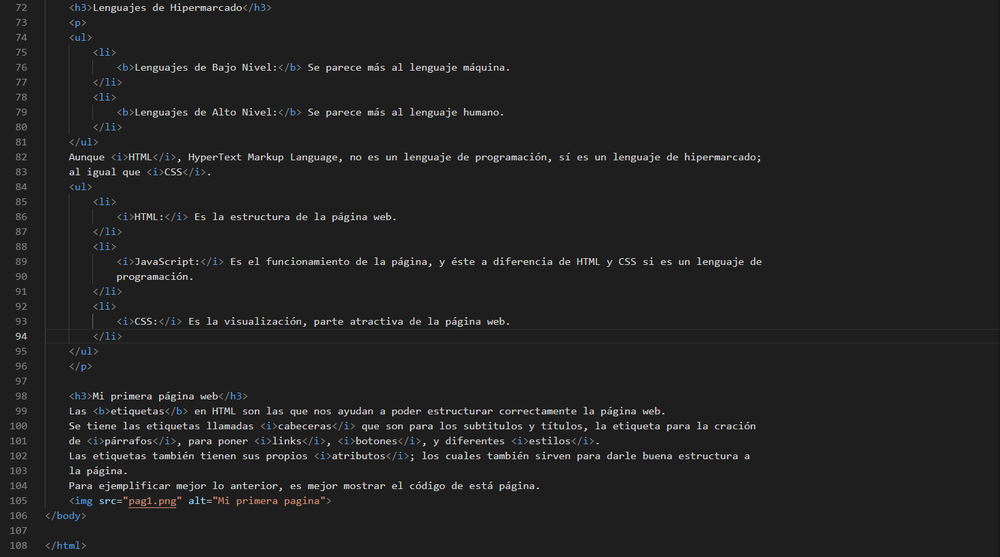

Interconected Network o mejor conocida como Internet es una gran red de computadoras conectadas
globalmente.
La información viaja del centro de datos (servidor), a travez de una red de cables de fibra optica, hasta llegar
a un dispositivo por medio de su IP.
Dichos cables son tirados por barcos al mar, los cuales se conectan hasta el router de las casas.
El mapa que siguen dichos cables es el siguiente:
Historia de la World Wide Web
Fue creada por Tim Barners-Lee. Él hizo accesible el internet. Originalmente la desarrolló para divulgar
artículos científicos,
pero actualmente la WWW sirve para más que eso, ya que se usa principalmente para compartir datos entre
computadoras.
El lenguaje de la web es HTML y ésta se lee atraves de los navegadores, los cuales renderizan la información
para hacerla visible del código a como se ve en pantalla.
Diferencia entre Internet y Web
Como ya se vió anterirormente, la Web y el Internet no son lo mismo.
Una forma de ver su diferencia es:
Internet: Es la infraestructura de la información, construcción de elementos, como si fueran las vías por
donde pasa un tren.
Web: Es una de las maneras en las que fluye la información a traves del internet, como si fuera el tren
de datos en el internet.
Algoritmos
Definición: Son pasos finitos bien estructurados para que sean seguidos por la computadora.
Un software es un algoritmo y puede expresarse en 4 maneras principales:
Lenguaje Natural: Descripción detallada y paso por paso en el lenguaje escrito de cada problema a
resolver y cómo se espera resolverlo.
Diagrama de Flujo: Diagrama visualmente entendible, se dibuja paso a paso.
Pseudocódigo: Combianción del lenguaje natural con las convenciones y sintaxis de algún lenguaje de
programación.
Código: Serie de sentencias y métodos para seguir instrucciones.
Lenguajes de Hipermarcado
Lenguajes de programación
Lenguajes de Bajo Nivel: Se parece más al lenguaje máquina.
Lenguajes de Alto Nivel: Se parece más al lenguaje humano.
Aunque HTML, HyperText Markup Language, no es un lenguaje de programación, sí es un lenguaje de hipermarcado;
al igual que CSS.
HTML: Es la estructura de la página web.
JavaScript: Es el funcionamiento de la página, y éste a diferencia de HTML y CSS si es un lenguaje de
programación.
CSS: Es la visualización, parte atractiva de la página web.
Mi página web
Las etiquetas en HTML son las que nos ayudan a poder estructurar correctamente la página web.
Se tiene las etiquetas llamadas cabeceras que son para los subtitulos y títulos, la etiqueta para la creación
de párrafos, para poner links, botones, y diferentes estilos.
Las etiquetas también tienen sus propios atributos; los cuales también sirven para darle buena estructura a
la página.
Para ejemplificar mejor lo anterior, es mejor mostrar el código de está página.



Este boton redirecciona a la página oficial de Technolochicas.